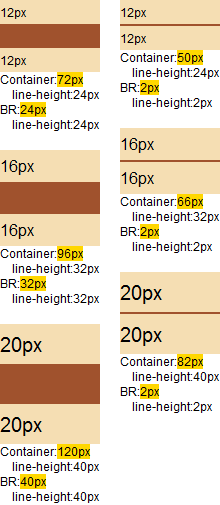
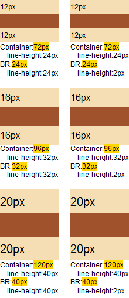

RX1006: IE(Q) Firefox(Q) Opera 中 BR 元素的 'line-height' 特性的计算值在某些情况下会小于其继承值
标准参考
根据 W3C HTML4.01 规范中的描述，BR 元素会在当前行强制插入一个换行符，这个换行符也是空白符的一种。
根据 W3C CSS2.1 规范中的描述，'line-height' 特性是一个具备继承性、可作用于任何元素。
对于内容由 inline 级元素构成的块级元素，'line-height' 特性指定了其内行框的最小高度。
对于行内元素，'line-height' 特性指定了行框的高度（行内替换元素除外，因为它的高度由 'height' 特性指定）。
而百分比的 'line-height' 特性的计算值则是有设定值与文字字号（'font-size'）相乘得来。
关于 BR 元素的详细信息，请参考 HTML4.01 规范 9.3.2 Controlling line breaks 中的内容。
关于 'line-height' 特性的详细信息，请参考 CSS2.1 规范 10.8.1 Leading and half-leading 中的内容。
问题描述
当为 BR 元素设置 'line-height' 特性时，在 IE8(S) Firefox(S) Chrome Safari 中 BR 元素的 'line-height' 特性的计算值不会小于其继承值。在 IE6 IE7 IE8(Q) Firefox(Q) Opera 中计算后则可能会小于其继承来的 'line-height' 特性的计算值。
造成的影响
为 BR 元素设置过小的 'line-height' 特性的值，在不同浏览器中 BR 元素会产生不同高度的空白。
受影响的浏览器
| IE(Q) Firefox(Q) Opera |
|---|
问题分析
分析以下代码：br_line-height.html
<style>
body { font-family:Arial; }
.cont { width:100px; background:sienna; line-height:200%; }
.cont br.lh { line-height:2px; }
.sibling { background:wheat; }
.info { font-size:12px; line-height:120%; }
.hl { background:gold; }
</style>
<script>
window.onload = function() {
function $(id) { return document.getElementById(id); }
if (!window.getComputedStyle) {
window.getComputedStyle = function($target) {
return $target.currentStyle;
};
}
}
function ptToPx (pt) {
return (/pt/gi.test(pt)) ? (parseInt(pt) / 0.75) + "px" : pt;
}
for (var i = 1; i <= 6; i++) {
$('info' + i).innerHTML = 'Container:<span class="hl">'
+ $('d' + i).offsetHeight
+ 'px</span><br /> line-height:'
+ ptToPx(getComputedStyle($('d' + i)).lineHeight)
+ '<br />BR:<span class="hl">'
+ ($('d' + i).offsetHeight - $('d' + i + 's1').offsetHeight - $('d' + i + 's2').offsetHeight)
+ 'px</span><br /> line-height:'
+ ptToPx(getComputedStyle($('br' + i)).lineHeight);
}
}
</script>
<div style="float:left; width:120px;">
<div id="d4" class="cont" style="font-size:12px;">
<div id="d4s1" class="sibling">12px</div>
<br id="br4" />
<div id="d4s2" class="sibling">12px</div>
</div>
<div id="info4" class="info"></div>
<br />
<div id="d5" class="cont" style="font-size:16px;">
<div id="d5s1" class="sibling">16px</div>
<br id="br5" />
<div id="d5s2" class="sibling">16px</div>
</div>
<div id="info5" class="info"></div>
<br />
<div id="d6" class="cont" style="font-size:20px;">
<div id="d6s1" class="sibling">20px</div>
<br id="br6" />
<div id="d6s2" class="sibling">20px</div>
</div>
<div id="info6" class="info"></div>
</div>
<div style="float:left; width:120px;">
<div id="d1" class="cont" style="font-size:12px;">
<div id="d1s1" class="sibling">12px</div>
<br id="br1" class="lh" />
<div id="d1s2" class="sibling">12px</div>
</div>
<div id="info1" class="info"></div>
<br />
<div id="d2" class="cont" style="font-size:16px;">
<div id="d2s1" class="sibling">16px</div>
<br id="br2" class="lh" />
<div id="d2s2" class="sibling">16px</div>
</div>
<div id="info2" class="info"></div>
<br />
<div id="d3" class="cont" style="font-size:20px;">
<div id="d3s1" class="sibling">20px</div>
<br id="br3" class="lh" />
<div id="d3s2" class="sibling">20px</div>
</div>
<div id="info3" class="info"></div>
</div>
上面代码中设定了【.cont】的 'line-height' 特性值为 200%。其内所有行内元素的高度为其字号乘以 200%。
代码分为两组，区别为第一组的 【.cont】内的 BR 元素没有设定 'line-height' 特性，则使用继承值，即【.cont】的 'line-height' 特性的值；第二组的 BR 元素明确设定了 'line-height' 特性，值为 1px。
每组代码中分别以 12px、16px、20px 的字号做测试。并将渲染后的【.cont】的高度、【.cont】减去两个 wheat 色的 DIV 元素的高度（理解为 BR 元素带来的空行的高度）以及【.cont】和 BR 的 'line-height' 特性计算值显示出来。
这段代码在各浏览器中运行效果如下：
| IE6 IE7 IE8(Q) Firefox(Q) Opera | IE8(S) Firefox(S) Chrome Safari |
|---|---|
|  |  |
可以看到对于没有设定 'line-height' 特性的 BR 元素，各浏览器的处理均相同。BR 继承了其父元素的【.cont】的 'line-height' 特性，在两个 wheat 色的 DIV 元素之间出现了以行高作为高度的空白区域。
对于设定了 'line-height' 特性的 BR 元素，则出现了差异：
- 在 IE6 IE7 IE8(Q) Firefox(Q) Opera 中，浏览器最终使用了设定在 BR 元素上的 line-height:2px，从而 BR 元素形成的那个行框的高度为 2px。
- 在 IE8(S) Firefox(S) Chrome Safari 中，浏览器没有使用 BR 元素上的 line-height:2px，而是仍然使用 BR 继承自父元素的 line-height:200% 的计算值。
下面进一步分析 BR 元素上设定 'line-height' 特性的值与其继承值的关系。
分析以下代码：br_line-height_ani.html
<style>
body { font-family:Arial; }
.cont { width:100px; background:sienna; line-height:200%; }
.cont br.lh { line-height:2px; }
.sibling { background:wheat; overflow:hidden; }
.info { font-size:12px; line-height:120%; }
.hl { background:gold; }
</style>
<script>
window.onload = function() {
function $(id) { return document.getElementById(id); }
if (!window.getComputedStyle) {
window.getComputedStyle = function($target) {
return $target.currentStyle;
};
}
}
function ptToPx (pt) {
return (/pt/gi.test(pt)) ? (parseInt(pt) / 0.75) + "px" : pt;
}
function showInfo () {
$('info').innerHTML = 'Container:<span class="hl">'
+ $('d').offsetHeight
+ 'px</span><br /> line-height:'
+ ptToPx(getComputedStyle($('d')).lineHeight)
+ '<br />BR:<span class="hl">'
+ ($('d').offsetHeight - $('ds1').offsetHeight - $('ds2').offsetHeight)
+ 'px</span><br /> line-height:'
+ ptToPx(getComputedStyle($('br')).lineHeight);
}
var k = 60;
setInterval(function () {
$('br').style.lineHeight = --k + "px";
showInfo();
(k == 0) && (k = 60);
}, 50);
}
</script>
<div id="d" class="cont" style="font-size:12px;">
<div id="ds1" class="sibling">12px</div>
<br id="br" class="lh" />
<div id="ds2" class="sibling">12px</div>
</div>
<div id="info" class="info"></div>
上面代码结构与上一段测试样例类似，通过脚本不算调整 BR 元素的 'line-height' 特性的值在 50px 至 0 之间变化。
这段代码在各浏览器中运行效果如下：
| IE6 IE7 IE8(Q) Firefox(Q) Opera | IE8(S) Firefox(S) Chrome Safari |
|---|---|
 |
 |
通过上面的动画对比很明显的看出，在 IE8(S) Firefox(S) Chrome Safari 中 BR 元素的 'line-height' 特性的计算值不会小于其继承值。
解决方案
尽可能不为 BR 元素设定一个可能小于其继承值的值。
参见
知识库
相关问题
测试环境
| 操作系统版本: | Windows 7 Ultimate build 7600 |
|---|---|
| 浏览器版本: |
IE6 IE7 IE8 Firefox 3.6.8 Chrome 6.0.472.11 dev Safari 5.0.1 Opera 10.60 |
| 测试页面: | br_line-height.html br_line-height_ani.html |
| 本文更新时间: | 2010-08-10 |
关键字
BR height line-height 换行 break 高度 行高